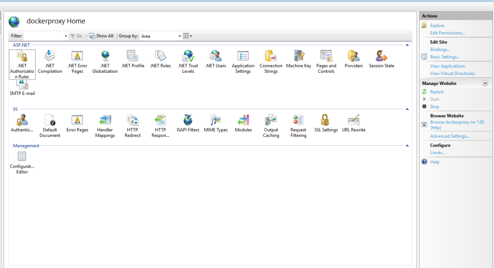
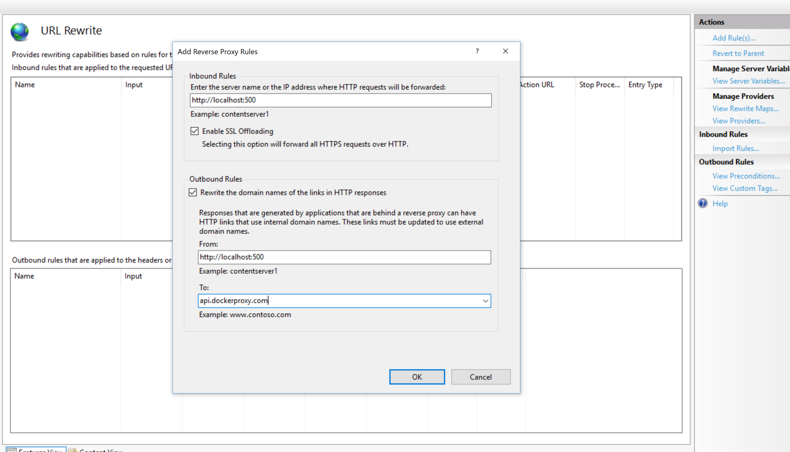

This walkthrough will run through setting up AdminUI for docker.
AdminUI is deployed as 2 separate Docker images - one for the UI website and one for the API website.
In production, you could choose to have the UI website image and the API website image running in the same Docker container or in separate Docker containers.
Either way, it is envisaged that they will be configured to communicate with your existing (external) identity server.
Prerequisites
Before beginning the installation, there are several aspects to consider to ensure that Docker is configured correctly.
What do I need to check before I install Docker?
Before beginning the installation, ensure that Docker is configured to use the following:
- Using Linux Containers (Windows only) - see Docker instructions on switching containers for more information
- Has Docker Compose installed? (to check this, type
docker-compose)
Running Docker Commands on Linux
If you're running Docker on a Linux host and you're having issues running these commands, check you have suitable permissions.
Walkthrough
This walkthrough will take you through the entire Docker configuration process, resulting in a working environment for the IdentityExpress AdminUI, with the UI and backend API running on the same machine and targeting an existing IdentityServer.
Getting the Docker Compose File
For most basic installations, we can use the Docker Compose file made available upon purchase. This would have been emailed to you after payment or at the start of your trial.
The current Docker Compose file is designed to get you up and running as fast as possible, and start demoing, just run docker-compose up. It will setup 5 Docker containers: Admin UI, Admin API, a test IdentityServer, a test MySQL Database and a test client, all of which are preconfigured to communicate with each other with minimal user input.
If you are using our test IdentityServer it is vital that before you begin, you add a map within your hosts file from your local IP address to "ids".
To do so, browse to your local hosts files, and add an entry as follows: '127.0.0.1 ids'
On Windows, your host file is usually found at 'C:\Windows\System32\Drivers\etc\hosts'
On Linux, your host file is usually found at '/etc/hosts'
If you are looking to configure AdminUI against an existing IdentityServer then continue the walkthrough.
Configuration
There are multiple variables that you can configure in the compose file depending on your setup:
Ports
We can configure both the internal and external ports used in the docker containers. This is in the format of host:container. Please do not change the container port when using the compose file, however you are welcome to change the host port if your environment has any port clashes.
Environment Variables
Environment variables are also available for setting application specifics. These are set in the following format in your Docker Compose file:
environment:
- UiUrl=http://localhost:5000
- ApiUrl=http://localhost:5001
- AuthorityUrl=http://ids:5003
For the api container the minimum configuration required is:
DbProviderThis sets the database type you are using. Supported types and their values are:SqlServerMySqlPostreSqlIdentityConnectionStringThe connection string for your Identity database (users)IdentityServerConnectionStringThe connection string for your IdentityServer database (clients, resources & grants)AuthorityUrlUrl of the IdentityServer installation protecting the UIUiUrlUrl of the AdminUI frontend (the idxui container)RequireHttpsMetadataSet totrueorfalseif you want to ensure IdentityServer discovery endpoint uses TLS. Must betruefor productionLicenseKeyThe full license key for AdminUI
And for the ui container we need:
AuthorityUrlUrl of the IdentityServer installation protecting AdminUIApiUrlUrl of the AdminUI backend (the idxapi container)UiUrlUrl of the AdminUI frontend (the idxui container)
The full list of configuration options is avaliable here
IdentityServer & Database Resolution
Ensure that your IdentityServer site is either: Publicly resolvable via DNS or running locally on the Docker host machine on all network devices (e.g: http://+:5555/). If you are running locally, ensure that the AuthorityUrl setting uses the IP address of the local Docker network device.
Any used databases must accept remote connections. If this database is on your Docker host machine, you can use the IP address of your Docker network device in the connection string.
If you are running IdentityServer and the database locally to the Docker host machine, also ensure that your firewall allows connections on the necessary ports.
Docker Login
Before we can run the containers we have one final step: authentication.
The docker images used for Admin UI are found in a private Docker registry, which is protected by a username and password. These credentials are supplied when you purchase AdminUI.
Once you have the credentials you run:
docker login identityserverregistry.azurecr.io
First Run
On each startup the AdminUI API Container will run ALL migrations from its entryscript. If you would like to see and/or modify which migrations run on startup please see our migration documentation.
Docker Compose
Now we can run the Docker Compose file using the command:
docker-compose up
This must be done in the location of the Docker Compose file or by providing the path using the -f flag.
You should now be able to access the IdentityExpress Admin UI on http://localhost:5000.
Deploying Docker Images Separately
The Admin UI and API Docker images are designed to be scaled separately. This means you can place each image on separate machines each with their own load balancing policies.
Individual Docker Compose files are not available for the UI and API, however you can easily create these with a bit of Docker know-how, or use the docker run command directly.
docker run identityserverregistry.azurecr.io/idxui
This will run the UI image alone. A similar approach can then be taken with the API image, where the image is tagged identityserverregistry.azurecr.io/idxapi.
Ports used can then be set as -p 5000:5000 and environment variables as -e "AuthorityUrl=http://ids:5003"
Making Docker Public with a Reverse Proxy
To make the Docker containers public, we first need to add a web server to the mix. This web server will act as a reverse proxy, forwarding all calls to our running Docker instances. These web servers do not need to dockerized.
IIS Reverse Proxy
To setup IIS to act as a reverse proxy, there are two prerequisites that need to be installed within IIS:
- URL Rewrite Module
- Application Request Routing
Once these are installed we can then go to the site we want to configure and select 'URL Rewrite' found in the IIS section.

We then need to use "Add Rule(s)...", found in the Actions section.
We can then use the Reverse proxy template, found in the Inbound and Outbound Rules section.

Now we need to set the Inbound Rule, telling IIS where to forward requests to. By default this would be http://localhost:5000. If your Docker container is running HTTPS, ensure you disable SSL Offloading, ensuring TLS is maintained.
We also need to configure an Outbound Rule, to allow IIS to return responses from our Docker container using your site URL instead of the Docker container responding directly. Here the From address needs to be the domain of you Docker container (e.g. http://localhost:5000) and the To address you sites address (e.g. api.docker.com).
FAQ
Why don't my Docker commands work on Linux?
Ensure you are using a user with sufficient privileges.
What do I do if I experience a port clash?
You may experience a scenario where you have a clash between ports in-use on your host machine and the ports specified in the docker-compose.yml file. Port mappings in the docker-compose.yml file are specified in host:container pairs. You can change the host port in any mapping but be careful to change all occurances of the usage of that host port in other environment variables used in the docker-compose.yml file.
Connecting to Databases on Docker Host Machine
To connect a container to a local database running on the Docker host machine, ensure you have configured the following:
- Enable remote connections to the database
- Enable firewall rule to allow connection using the configured port number
- Use the Docker network adapter IP address for connection strings